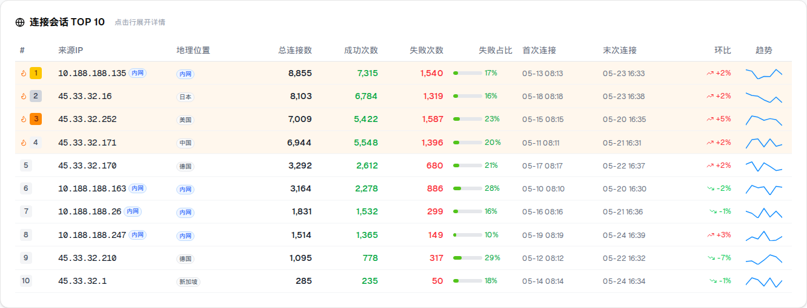

1. 问题描述与截图
在"运营TOP与趋势"页面的"连接会话 TOP 10"榜单表格中，存在以下两处视觉缺陷（截图中红框标注区域）：
缺陷 1 — 榜单序号徽标错位（BUG-A）
- 缺陷类型
- 视觉错位
- 触发条件
- 存在飙升行（
isSpike = true）时，第 1、2 名序号徽标被向右偏移
- 影响范围
- 六个维度中含有飙升标记的所有行
- 验证依据
- 附件截图红框区域 + TopTable.tsx 源码审查
问题现象

第 1、2 名含火焰图标（isSpike=true），序号徽标被图标向右推移；
第 3、4 名无图标，序号徽标从左侧起始，两类行徽标水平位置不一致。
缺陷 2 — 内网地理位置标签重复（BUG-B）
- 缺陷类型
- 冗余标签
- 触发条件
- 来源 IP 为内网地址（
isInternal = true，geoLocation = 'internal'）
- 影响范围
- "连接会话"维度及其他含来源IP和地理位置双列的维度
- 验证依据
- 附件截图红框区域 + TopTable.tsx 源码审查
问题现象
 来源IP列末尾已渲染"内网"蓝色徽章；地理位置列同时再次渲染"内网"蓝色徽章，
同一行出现两个意义相同的"内网"标签。
来源IP列末尾已渲染"内网"蓝色徽章；地理位置列同时再次渲染"内网"蓝色徽章，
同一行出现两个意义相同的"内网"标签。
2. 根本原因分析
BUG-A：序号徽标错位
序号列 <td> 使用 flex items-center gap-1 布局，子元素顺序为：
火焰图标（条件渲染）→ 排名徽标。
当 isSpike = true 时渲染 <Flame className="h-3 w-3">，
占据 12px + gap 4px = 16px 空间，将徽标整体右移；
当 isSpike = false 时图标不渲染，徽标从左边缘起始。
两类行徽标在同一列中水平起点不同，产生视觉错位。
<div className="flex items-center gap-1">
{row.isSpike ? (
<Flame className="h-3 w-3 text-orange-500" />
) : null}
<span className={`inline-flex h-5 w-5 ... ${RANK_BADGE[row.rank]}`}>
{row.rank}
</span>
</div>
BUG-B：内网标签重复
来源IP列（col.key === 'sourceIp'）在 row.metrics.isInternal === true
时渲染国际化文本 t('internal') 的 Badge。
地理位置列（col.key === 'geoLocation'）在 geo === 'internal'
时同样渲染相同文本的 Badge，而内网 IP 的 geoLocation 字段值正是 'internal'，
因此两个条件同时成立，导致同行出现两个"内网"标签。
3. 修复方案
方案 A：序号徽标对齐
将火焰图标（条件渲染）包裹在一个固定宽度占位容器中：
<span className="inline-flex w-3 shrink-0 items-center justify-center">。
无论 isSpike 是否为 true，该容器始终占据 w-3（12px）空间，
从而保证所有行的排名徽标始终从相同的 x 轴位置起始，消除错位。
选择此方案而非绝对定位叠加的原因：占位 span 方案不影响行高、不修改列宽，
且在 flex 布局下语义清晰、不引入额外的 relative/absolute 层级。
方案 B：消除地理位置列重复内网标签
在 geoLocation 列的渲染逻辑中，增加前置守卫判断：
当 isInternalGeo === true 且 row.metrics.isInternal === true 时，
返回 <span className="text-muted-foreground">-</span> 占位，
不渲染"内网"Badge，因为来源IP列已承载该信息。
选择"地理位置列显示 -"而非"来源IP列去掉标签"的原因：
内网地址本身没有地理位置概念，- 的语义（无数据）比重复显示"内网"更准确；
来源IP列保留标签可以让用户在扫描IP列时即可判断内外网属性。
4. 代码变更
变更文件
变更一：序号列火焰图标占位容器（BUG-A 修复）
<div className="flex items-center gap-1">
<span className="inline-flex w-3 shrink-0 items-center justify-center">
{row.isSpike ? (
<Flame className="h-3 w-3 text-orange-500" />
) : null}
</span>
<span className={`inline-flex h-5 w-5 ... ${RANK_BADGE[row.rank]}`}>
{row.rank}
</span>
</div>
变更二：地理位置列内网判断守卫（BUG-B 修复）
if (col.key === 'geoLocation') {
const geo = String(value ?? '');
const isInternalGeo = geo === 'internal';
if (isInternalGeo && Boolean(row.metrics.isInternal)) {
return <span className="text-muted-foreground">-</span>;
}
return (
<Badge variant="outline" className={...}>
{isInternalGeo ? (t('internal') as string) : geo.split(' ')[0]}
</Badge>
);
}
国际化合规说明